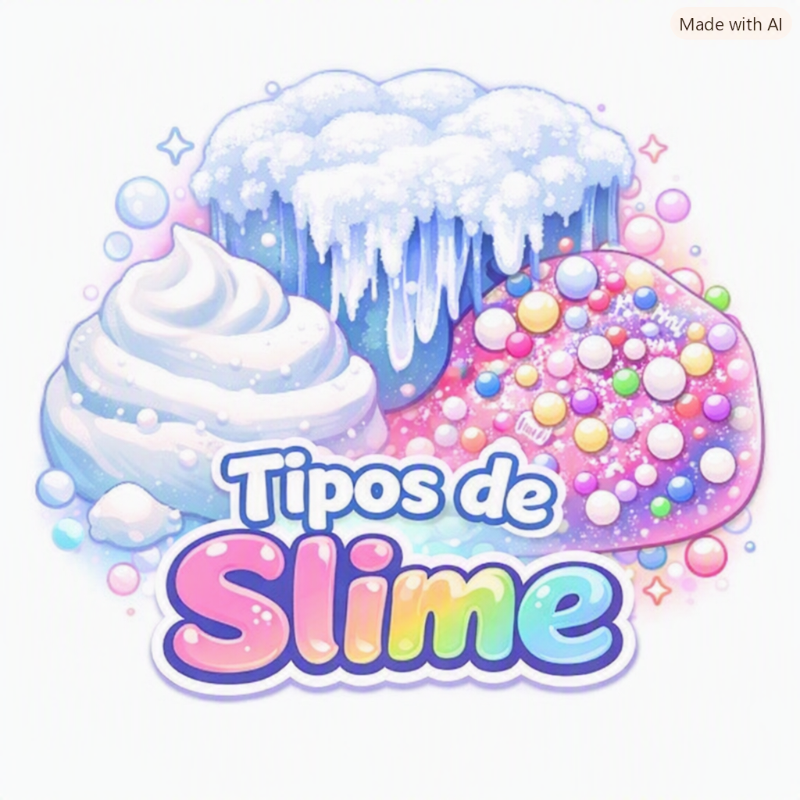
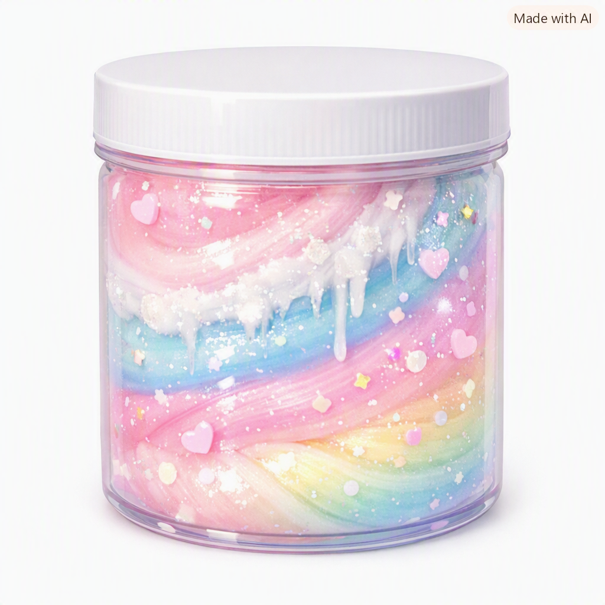
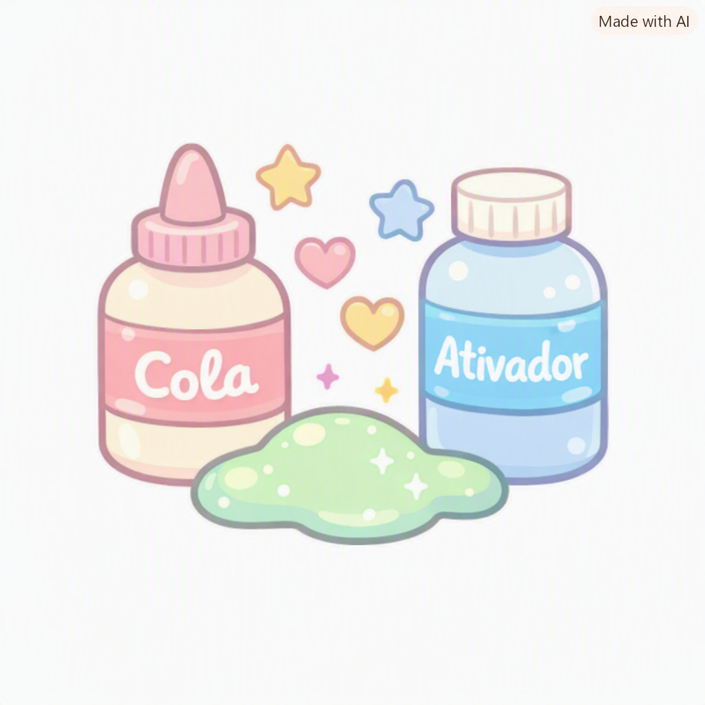
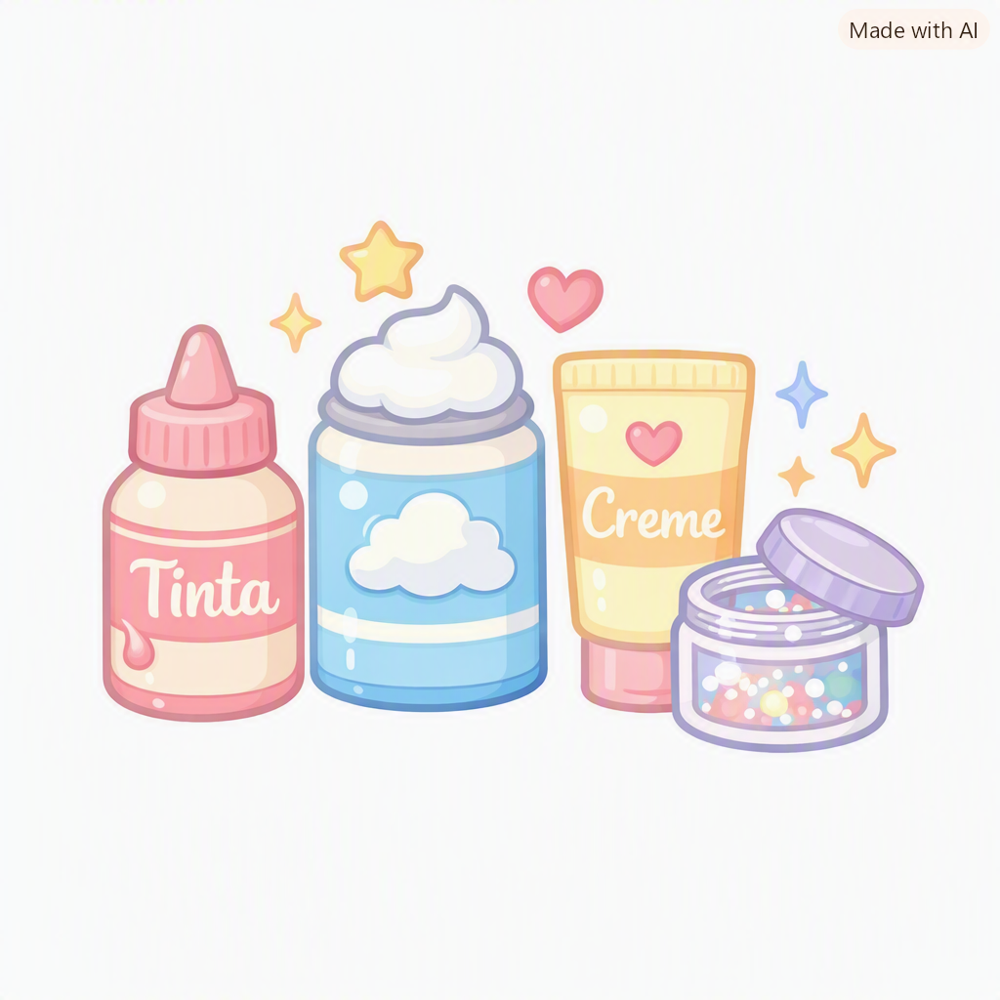
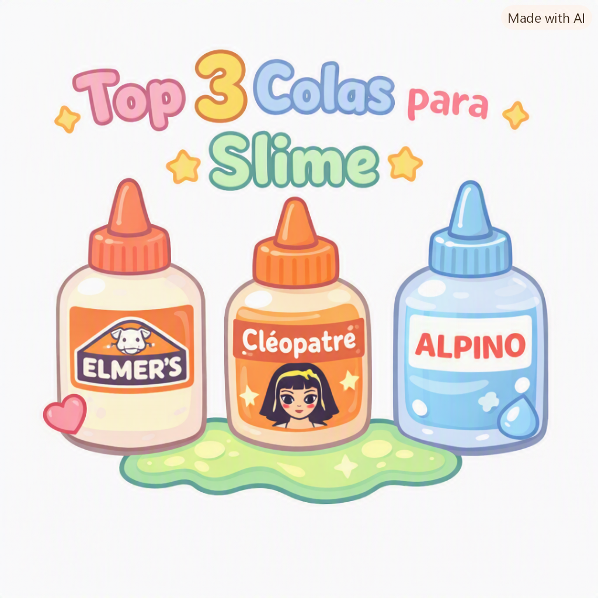

Meu primeiro post
Por: Miriam Aranha
Boas-vindas ao meu novo blog! Aqui vou compartilhar dicas slime
Vou compartilhar os tipos de slime e como fazer slimes
Meu primeiro post
Por: Miriam Aranha
Boas-vindas ao meu novo blog! Aqui vou compartilhar dicas slime

Tipos de slime
Por: Miriam Aranha
Nessa postagem sobre TOP 3 melhores tipos de slime:

Como armazenar a Slime corretamente
Por: Miriam Aranha
Armazene sua slime em um recipiente hermético com a tampa bem fechada para evitar o ressecamento e mantenha o pote em um ambiente fresco e seco, longe da luz solar e calor excessivo, que podem derreter ou alterar a cor da massa.

Ingredientes principais para fazer uma slime
Por: Miriam Aranha
1. Cola branca ou transparente: Forma a estrutura principal da massa. 2. Ativador (água boricada ou bórax diluido ): Transforma a cola líquida em uma massa elástica. 3. Bicarbonato de sódio: Ajuda a firmar o ponto da mistura junto com o ativar.

Ingredientes Opcionais
Por: Miriam Aranha
1. Corante alimentício ou tinta: dá cor à slime 2. Espuma de barbear: Deixe a massa fofa e volumosa (fluffy) 3. Creme hidratante: Torna a slime mais macia e maleável 4. Glitter ou purpurina: Adiciona brilho e enfeites

Top 3 melhores opções de cola
Por: Miriam Aranha
1. Cola Branca Pritt Tenaz 2. Cola Transparente Acrilex 3. Cola multiuso Transparente Clear Radex